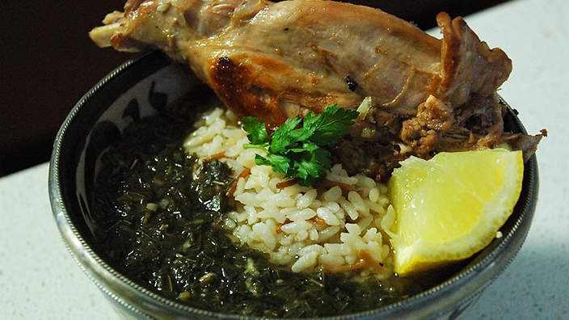

Deal
Unlike the amateur players, the beginner player relied on emotion, rather than logic, to dictate their play.
When the cards are dealt, there is a high level of Theta within the frontal lobes, demonstrating that even at starting level, there is a level of automation with this play. This suggests that little thought goes into the Deal play.
We stood trembling
behind the door. I was aware that my hearbeats mingled with the pulse
in her hand as it stayed firmly pressed to my mouth.
What I attemped to understand was, at best, blurred. My mother had,
as usual, made me wear my navy woollen trousers and kitted green
top...
melokhia

Every evening it was the same. My mother would never give me a single morsel of meat. This she always reserved for Ahmad, sometimes for my father. Her ways never changed. Maybe she never ate chicken or meat herself. Every day, as we sat in the kitchen to eat, her love would be declared: having filled my plate with soup she serves my brother Ahmad, taking all her time, searching carefully for the best pieces of meat.
The war was like a weevil that had found its way into the heart of a huge bag of white flour and settled there. And I, likewise, was destined not to stay in the village. I would return to Beirut at the first opportunity, to be overtaken by the same weevil, back in the midst of the fighting.
X
Lebanese Civil War
The Lebanese civil war began on 13 April 1975, two weeks
before the end of the war with Vietnam. In the afternoon of 4 June 1982 Israeli forces raided and two days later invaded Lebanese territory. A condition that had prevailed for seven years was abruptly changed. But it was during those seven years preceding the invasion that the fabric of Lebanese society had begun to unravel, making room for a transformed national consciousness.
-Miriam Cooke, War's Other Voices
Context
Check
During the check, there is a low amount of activity, with small spikes of Theta brainwaves.
This is likely due to the beginner viewing the play as a safe option that requires little consideration.
Raise
During a raise, there is a considerable spike of Beta activity in the right frontal lobe.
This demonstrates that there is a conscious processing of information and consequences, however the play is still led by emotional instinct rather than skill or logic.
We stood trembling
behind the door. I was aware that my hearbeats mingled with the pulse
in her hand as it stayed firmly pressed to my mouth.
What I attemped to understand was, at best, blurred. My mother had,
as usual, made me wear my navy woollen trousers and kitted green
top.
All in
During an all-in, levels of brain activity in the Beta band spiked considerably across the full brain, showing that this is a high-stress situation for beginner players.
The beginner was equally guided by logic and emotion during this all-in.
Deal
When players are dealt in, the left frontal lobe showed high Beta activity.
This period showed the highest amount of time spent processing information and mental engagement.
The dominance of activity within the left frontal lobe demonstrated that players were led by logic rather than emotion.
Locked
Each morning, I merely locked the bathroom door and stayed
a prisoner, even as I used to seek refuge in the bathroom back home in Beirut when I was afraid of my father's penetrating eyes- afraid he would discover what I had grown into, afraid he would kill me. My father was always brutal.
"You look like a cat that has just eaten its own kittens," he said. "How is it possible for anyone to wear such a short, tight skirt? Who do you think you are, girl? Some sophisticated woman from France or England?" And when I didn't answer, he continued, "It would be all very nice if the short skirt showed a pretty figure. But look at you, look at all this makeup."
I felt a sense of relief.
I stopped wondering what would become of me. I knew that I was at home, just as everyone else was at home and taking refuge, no matter who they were. Even the beautiful women we saw in the society pages of the magazines were in the same fix, hiding in some corner in their elegant homes, hearing what I heard, thinking what I thought.
X
Lebanese Civil War
Much of the military tension between Zgharta and Tripoli was attributed to the Liberation Army of Zgharta (later renamed the Marada Forces, after the supposed ancestors of the Maronites), commanded by President Franjiyeh’s son Tony. When the army intervened to create a buffer zone between the two northern cities, it was accused of complicity with Zgharta. A call for a general strike by the LNM against the intervention of the army in the north provoked a new round of fighting in Beirut, in which the Phalange took the initiative to bombard the downtown district of the city, while their spokesperson declared that the fighting would not stop until the Lebanese army was deployed.
Ṭarābulsī, Fawwāz. A History Of Modern Lebanon. London: Pluto Press, 2012
Context
Check
During a check, players enter a meditative state with small peaks of Theta activity in the right frontal cortex.
This indicates that players viewed the check as an automatic process but instilled an emotional attachment to it, in anticipation as to how the subsequent play would unfold.
Raise
A raise caused players to enter a state of heightened alertness with a sharp spike in Beta activity. The right frontal lobe experienced the highest level of activity, driven by the emotional impact that a raise has on other players.
This enforces the psychology behind such a play, and activity is further increased during a bluff play.
Call
When players call, the brain registers intermediate levels of Alpha activity.
This demonstrates that a Call is interpreted as a relatively safe play, requiring only a relaxed alertness.
The division of brain activity across both sides of the frontal lobes show that the call is both a logical and emotional tactic.
All in
An all-in is both a tactical and emotional play – results demonstrated that even when bluffing, Beta levels were high in both sides of the frontal lobes.
As this play can make or break a player, this causes high emotional activity within the right frontal lobe.
Deal
Differing from lower-level players, expert players showed small spikes of Alpha activity.
This activity demonstrates a relaxed yet thoughtful alertness, in stark contrast to amateur players who were extremely active with spikes in Beta brainwaves and beginners who were considerably more relaxed, only showing Theta brainwaves.
When news stopped coming from my parents in the mountains, I felt
convinced that news from Ahmad and me had also stopped reaching them. I made the war my excuse for not joining them, as I had promised. I began
to noticed changes in my personality and in the way Ahmad's friends treated me.
only I was different, with my uneasiness, with my fear of seeing
Malek waiting outside the factory in his car; and then returning home to the fear that my father might have heard of my relationship with Malek... to the fear of my mother having made herself an expert in how a woman behaves as she trips nakes before men.
I did not heed my father's shouts as he warned me to keep clear
of the window, to close the shutter before they shot me. I could not hear the sound of any firing.
X
Beirut 1975-1976
 Ṭarābulsī, Fawwāz A History of Modern Lebanon
Ṭarābulsī, Fawwāz A History of Modern Lebanon
Context
Check
During a check, the expert registers a small peak in Theta activity, demonstrating that this is an automatic reaction.
There is a slight dominance in left frontal lobe activity – this is like due to expert players folding on hands that aren’t worth pursuing, so some logic is used to process the situation.
Raise
During a raise, the expert shows spikes in Beta activity; however at a lower level than demonstrated by beginners or amateurs.
The distribution of activity across both frontal lobes demonstrates that there is a conscious processing of information and consequences, however the play is still led by emotion over experience.
Call
When expert players call, the brain registers intermediate levels of Alpha activity.
There is an equal distribution of activity across both sides of the brain, which shows that the play is based on experience and logic.
All in
As with other skill levels, the dominant brainwave activity during an all-in play by an expert is Beta.
Despite lower levels of activity throughout other players, the expert elicited high stages during the all-in, demonstrating the levels of thought required for this play. The expert was predominantly guided by experience for the play; however it is clear that experience is key in making the decision.